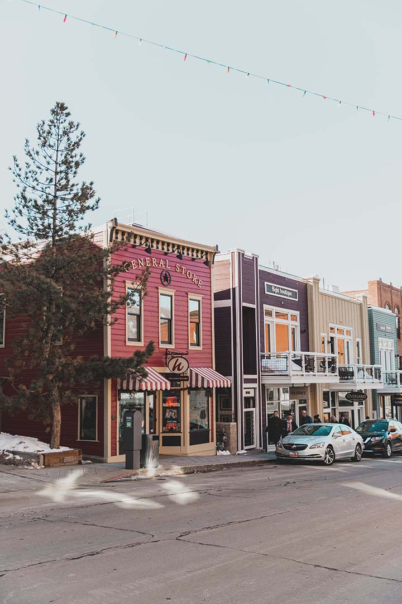

Park City has Things for Every Member of the Family!
Park City has so much to offer when it comes to entertainment. During the winter is when things get really fun! We have made a list of fun activities to do with the family:
- Main Street Park City (left): Main Street has grown so much over the last 10 years. You wouldn't be able to enjoy all that it has to offer in one trip, which is what makes Park City so much fun to revisit! Main Street PC has plenty of great restarunts and several stores to shop til you drop. One of our favorite stores is the General Store. The store has a wide range of knick-knacks, shirts, and jewelery.
- Redridge Outdoor Shopping Mall: Tons of big name stores, Bowling alley with a bar and other games, AMC movie theater and much more!
- Snowmobiling: We have many different companies to use and they are all great. Here at Park City Easily, we suggest using "Summit Meadows". They do a great job with getting you to sight seeing locations as well as a large area where they let you roam around on a path! So much fun!
- Skiing: This one is an obvious one, but we still think it should make the list. We have many areas within Park City to give a shot! Deer Valley is a skiing only mountain, making it off-limits to snowboarders. Park City Mountain Resort AKA Vale Resorts is connected to The Canyons now with a lift between the two Mountains. That makes it one of the largest system of mountains to ski without having to hop on a bus!
This list doesn't even scratch the surface of what Park City has to offer! You would be surprised to see all of the fun that can be had just exploring Park City without a plan. Around every corner is an adventure to be found!
